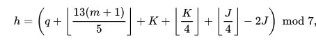
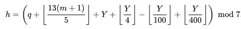
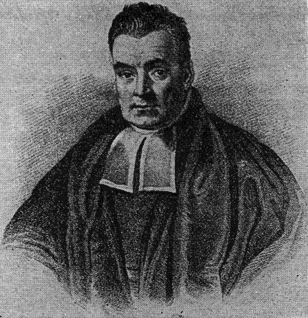
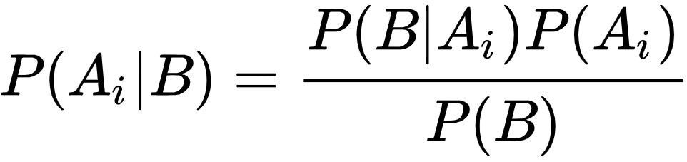

¡Bienvenidos a la inteligencia artificial de cálculos algorítmicos! En este
programa realizado con
Javascript se podrá interactuar con algunos de los algoritmos más
conocidos
de la aritmética: tales como el teorema bayesiano, el principio de congruencia de Zeller e incluso un
algoritmo
propio para calcular la distancia entre fechas.
Julius Christian Johannes Zeller
■ El principio de congruencia de Zeller es un algoritmo ideado por un sacerdote
protestante
alemán
llamado Julius Christian Johannes Zeller para calcular el día de la semana de cualquier fecha del
calendario. Zeller utilizó la aritmética modular para poder llevarlo a cabo.
h es el día de la semana (0 = domingo, 1 = lunes, 2 = martes, 3 = miércoles, 4 = jueves, 5 =
viernes,
6
=
sábado).
q es el día del mes.
m es el mes (3=marzo, 4=abril, 13=enero, 14=febrero). Enero y febrero se
cuentan como los meses 13 y 14 del año anterior.
K el año de la centuria. Se calcula como el módulo del año 100.
J es la centuria., es el año dividido por 100.

Congruencia de Zeller convertida para una implementación computacional más sencilla:
"J" y "K" se calculan utilizando el año estándar que introduce algunas modificaciones adicionales
como
tratando enero y febrero como los meses 13 y 14 del año anterior. "-2J" se convierte en "+ 5J"
para evitar
números negativos y simplemente salta los días en 7, lo que todavía da como resultado el mismo día de la semana
y evita tomar el módulo de un número negativo que molesta a Javascript.


Thomas Bayes
■ El teorema de Bayes es una proposición planteada por el matemático inglés
Thomas Bayes que
expresa
la probabilidad condicional de un evento aleatorio A dado B en términos de la distribución de
probabilidad condicional del evento B dado A y la distribución de probabilidad marginal de solo A.
En términos más generales y menos matemáticos, el teorema de Bayes es de enorme relevancia puesto que
vincula la probabilidad de A dado B con la probabilidad de B dado A. Es decir, por ejemplo, que
sabiendo la
probabilidad de tener un dolor de cabeza dado que se tiene gripe, se podría saber (si se tiene algún dato
más), la probabilidad de tener gripe si se tiene un dolor de cabeza. Muestra este sencillo ejemplo la alta
ciencia en todas sus ramas, puesto que tiene vinculación íntima con la comprensión de la probabilidad de
aspectos causales dados los efectos observados.

A continuación la calculadora predictiva del clima:
Calculadora del Tiempo
■ Finalmente, el algoritmo para calcular la distancia entre distintas fechas,
cualesquiera que estas sean. Para que Javascript nos proporcione el número de días entre las dos
fechas, se aplicó el siguiente procedimiento:
1) Primero se obtiene el valor interno en milisegundos de la fecha usando la función getTime()
de
JavaScript incorporada.
2) Tan pronto como ambas fechas se conviertan, continúe restando la mayor de la menor, que a
su
vez
devuelve la diferencia en
milisegundos.
3) Posteriormente, el resultado final se puede calcular dividiendo la diferencia (que está en
milisegundos) de ambas fechas por el número de milisegundos en un día: (1000 * 3600 * 24).